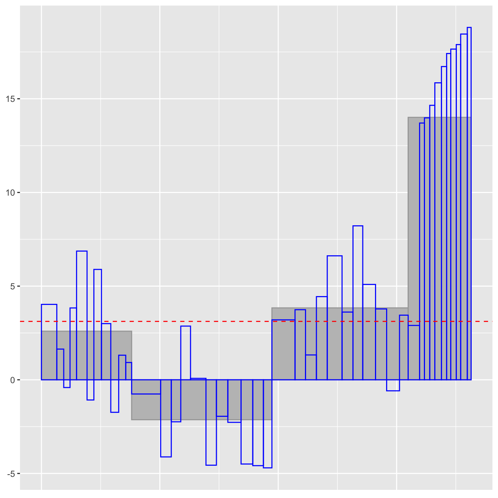

Sortings.RmdOrdering and sorting are important tools in statistical graphics. Different arrangements offer different views of the data. In UpAndDown plots, the ordering of the grouping levels can have a big influence. In nested datasets, the order is given, but in non-nested ones the user has a choice. A display of changes by district within age and gender will look very different to a display of changes by age within district and gender.
The sortings of the individual levels can have a big influence too. There are five options offered in the UpAndDownPlots package for sorting levels: no sorting (“orig”, standing for the original order), sorting by intial value (“base”, i.e. baseline), sorting by final value (“final”), sorting by percentage change (“perc”), sorting by absolute change (“abs”). With all five options you can also request the sorting to be in the reverse order by using the reverse parameter.
To see what difference another sorting method might make, you can draw a set of five plots for the same grouping variable, one for each sorting method, using the sort5 function.
library(UpAndDownPlots)
library(tidyverse)
xs <- sort5(NIpop, gvar="LGD2014_name", v1="y2011", v2="y2017")
gridExtra::grid.arrange(xs$uadl)Fig 1: UpAndDown plots for the five standard sortings of the district variable in the Northern Ireland population dataset. Percentage change is often most useful, but absolute change can be relevant when there is a mixture of large and small categories. For this situation sorting by the initial value (‘base’) can also be worth trying to emphasise the larger categories.
The ‘orig’ option, meaning ‘no sorting’, can be used to apply sortings that are not included in the package. With the Northern Ireland population data it could be interesting to order the districts within age groups by the ordering for the oldest age group. The code first constructs a smaller dataset with that ordering and then a version of the original dataset with the new ordering.
NIpopX <- NIpop %>% filter(age=="65+") %>% group_by(LGD2014_name) %>% summarise(s11=sum(y2011), s17=sum(y2017), rp=s17/s11-1)
NIpopX <- NIpopX %>% mutate(LGD=fct_reorder(LGD2014_name, rp))
NIpop1 <- NIpop %>% mutate(LGD2014_name=factor(LGD2014_name, levels=levels(NIpopX$LGD)))
ww <- ud_prep(NIpop1, v1="y2011", v2="y2017", levs=c("age", "LGD2014_name"), sortLev=c("orig", "orig"))
w1 <- ud_plot(ww, labelvar="age")
w1$uad
Fig 2: An UpAndDown plot of percentage changes for districts by age groups, where the districts are sorted by the percentage changes for the oldest group. As Belfast has the lowest increase amongst the 65+ group it is relatively easy to pick out in the other age groups.
Choosing ‘no sorting’ for a variable means sticking with whatever the original ordering of the variable was. In the NIpop dataset the age variable has the groups “00-15”, “16-39”, “40-64”, “65+” and the default alphanumeric ordering keeps them in that order. If you had a variable Age with groups “child”, “young”, “middle-aged”, “old” in a data set Data1, then you would have to change the default ordering (which would put “young” last). You could do that like this:
The percentage changes calculated depend on the grouping variables chosen and the order they are chosen in. The percentage changes used for sorting are calculated by the function ud_prep and are part of that output. The percentage changes drawn are calculated by ud_plot and are part of that function’s output.